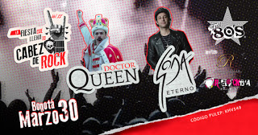

Linkin Park: confirman causa de la muerte de Chester Bennington
uvo que pasar una semana para que las autoridades determinaran la causa de muerte del famoso cantante de la banda Linkin Park Chester Bennington, quien fue encontrado sin vida el pasado jueves 20 de julio. La Oficina del Forense del Condado de Los Ángeles determinó que Chester Bennington, cuyo cadáver fue encontrado por su empleada doméstica dentro de la casa que tenía en Palos Verdes, se suicidó por ahorcamiento. El caso ya se encuentra cerrado.



GRAN CONCIERTO TRIBUTO A QUEEN Y SODA STEREO EN BOGOTÁ 2019
En 2019 regresa la fiesta que llena tu cabeza de rock en Bogotá al mejor estilo de full 80`s, presentando en esta ocasión en su segundo volumen dos grandes tributos: Dr. Queen & Soda Eterno La fecha para esta fiesta rockera es el próximo 30 de marzo, la oportunidad para poner a mover tu cabeza y cantar a grito herido los mejores éxitos de Dr. Queen (Bohemian World Tour 2019) y un homenaje a la música de Gustavo Cerati por Soda Eterno.